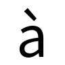
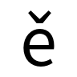

- A3：对照组 = F0（1-shot），变体 = F1@30k mid。回答「官方 RSI 加回来有没有用」。
- B1：对照组 = F2（ref8），变体 = F3 legacy。回答「Δ 之上 Support 有没有增益」；Style 列展示全部 ref8。
- 观感区：F1|F2|F3 同屏，非消融对照（shot 不同），勿当主结论。
- 池大小：A3 102 · B1 114 · 观感 156（拉丁配对 432）· 全量板 Mode A/B · 白话稿 §2.1
① 对照 A3 · F0 → F1（1-shot）
baseline=F0 · 绿=F1 相对 F0 更好 · 精选
| 字 / Style | Content | Style×1 | GT | F0 baseline | F1 vs F0 |
|---|---|---|---|---|---|
| O FZJingYLLTJW latin_upper score 1.61 | Content | Style×1 永 |  GT |  F0@100k baseline mem 0.01 L1 0.097 |  F1@30k vs F0 mem 0.82 (+0.81) L1 0.042 |
| p FZJianLTJW_Te latin_lower score 1.57 | Content |  Style×1 永 |  GT |  F0@100k baseline mem 0.01 L1 0.073 |  F1@30k vs F0 mem 0.84 (+0.83) L1 0.048 |
| G FZDeSHJW_515H latin_upper score 1.19 |  Content |  Style×1 永 |  GT |  F0@100k baseline mem 0.31 L1 0.082 |  F1@30k vs F0 mem 0.93 (+0.62) L1 0.037 |
| c FZBuGTJW latin_lower score 1.04 |  Content |  Style×1 永 |  GT |  F0@100k baseline mem 0.39 L1 0.052 |  F1@30k vs F0 mem 0.94 (+0.55) L1 0.020 |
| ā FZChuangHJW_DB latin_ext score 1.01 |  Content |  Style×1 永 |  GT |  F0@100k baseline mem 0.36 L1 0.087 |  F1@30k vs F0 mem 0.89 (+0.53) L1 0.082 |
| o FZLiuGQKJW-L latin_lower score 0.95 |  Content | Style×1 永 |  GT |  F0@100k baseline mem 0.15 L1 0.039 |  F1@30k vs F0 mem 0.73 (+0.58) L1 0.035 |
| g FZCuanBZBKSJW latin_lower score 0.94 | Content |  Style×1 永 |  GT |  F0@100k baseline mem 0.29 L1 0.103 |  F1@30k vs F0 mem 0.80 (+0.51) L1 0.082 |
| A FZFengYKSJ latin_upper score 0.84 |  Content |  Style×1 永 |  GT |  F0@100k baseline mem 0.22 L1 0.051 |  F1@30k vs F0 mem 0.66 (+0.44) L1 0.033 |
| e FZDouNTJW_Te latin_lower score 0.78 |  Content |  Style×1 永 |  GT |  F0@100k baseline mem 0.33 L1 0.060 |  F1@30k vs F0 mem 0.80 (+0.47) L1 0.079 |
| M FZJingLTJW-H latin_upper score 0.75 | Content | Style×1 永 |  GT |  F0@100k baseline mem 0.25 L1 0.152 |  F1@30k vs F0 mem 0.67 (+0.41) L1 0.118 |
①b A3 更多 Content×Style
同条件扫图
| 字 / Style | Content | Style×1 | GT | F0 baseline | F1 vs F0 |
|---|---|---|---|---|---|
| O FZJingYLLTJW latin_upper score 1.61 | Content | Style×1 永 | GT | F0@100k baseline mem 0.01 L1 0.097 | F1@30k vs F0 mem 0.82 (+0.81) L1 0.042 |
| p FZJianLTJW_Te latin_lower score 1.57 | Content | Style×1 永 | GT | F0@100k baseline mem 0.01 L1 0.073 | F1@30k vs F0 mem 0.84 (+0.83) L1 0.048 |
| c FZJianLTJW_Te latin_lower score 1.24 | Content | Style×1 永 |  GT |  F0@100k baseline mem 0.08 L1 0.035 |  F1@30k vs F0 mem 0.79 (+0.71) L1 0.053 |
| O FZDouNTJW_Te latin_upper score 1.19 | Content | Style×1 永 |  GT |  F0@100k baseline mem 0.14 L1 0.084 |  F1@30k vs F0 mem 0.80 (+0.65) L1 0.089 |
| G FZDeSHJW_515H latin_upper score 1.19 | Content | Style×1 永 | GT | F0@100k baseline mem 0.31 L1 0.082 | F1@30k vs F0 mem 0.93 (+0.62) L1 0.037 |
| C FZJingYLLTJW latin_upper score 1.18 |  Content | Style×1 永 |  GT |  F0@100k baseline mem 0.22 L1 0.169 |  F1@30k vs F0 mem 0.85 (+0.63) L1 0.114 |
| c FZBuGTJW latin_lower score 1.04 | Content | Style×1 永 | GT | F0@100k baseline mem 0.39 L1 0.052 | F1@30k vs F0 mem 0.94 (+0.55) L1 0.020 |
| ā FZChuangHJW_DB latin_ext score 1.01 | Content | Style×1 永 | GT | F0@100k baseline mem 0.36 L1 0.087 | F1@30k vs F0 mem 0.89 (+0.53) L1 0.082 |
| o FZLiuGQKJW-L latin_lower score 0.95 | Content | Style×1 永 | GT | F0@100k baseline mem 0.15 L1 0.039 | F1@30k vs F0 mem 0.73 (+0.58) L1 0.035 |
| g FZCuanBZBKSJW latin_lower score 0.94 | Content | Style×1 永 | GT | F0@100k baseline mem 0.29 L1 0.103 | F1@30k vs F0 mem 0.80 (+0.51) L1 0.082 |
| a FZBuGTJW latin_lower score 0.92 |  Content | Style×1 永 |  GT |  F0@100k baseline mem 0.27 L1 0.067 |  F1@30k vs F0 mem 0.75 (+0.48) L1 0.045 |
| à FZChuangHJW_DB latin_ext score 0.92 |  Content | Style×1 永 |  GT |  F0@100k baseline mem 0.25 L1 0.099 |  F1@30k vs F0 mem 0.71 (+0.46) L1 0.066 |
| o FZFengYKSJ latin_lower score 0.87 | Content | Style×1 永 |  GT |  F0@100k baseline mem 0.28 L1 0.039 |  F1@30k vs F0 mem 0.77 (+0.49) L1 0.027 |
| W FZDeSHJW_515H latin_upper score 0.85 |  Content | Style×1 永 |  GT |  F0@100k baseline mem 0.23 L1 0.073 |  F1@30k vs F0 mem 0.75 (+0.52) L1 0.089 |
| A FZFengYKSJ latin_upper score 0.84 | Content | Style×1 永 | GT | F0@100k baseline mem 0.22 L1 0.051 | F1@30k vs F0 mem 0.66 (+0.44) L1 0.033 |
| p FZDouNTJW_Te latin_lower score 0.80 | Content | Style×1 永 |  GT |  F0@100k baseline mem 0.11 L1 0.034 |  F1@30k vs F0 mem 0.60 (+0.49) L1 0.052 |
② 对照 B1 · F2 → F3（ref8）
baseline=F2 · 绿=F3 相对 F2 更好 · Style 为完整 ref8
| 字 / Style | Content | Style×8 | GT | F2 baseline | F3 vs F2 |
|---|---|---|---|---|---|
| c FZDouNTJW_Te latin_lower score 0.80 | Content |        Style×8 ref8 |  GT |  F2@75k baseline mem 0.50 L1 0.056 |  F3@80k vs F2 mem 0.89 (+0.39) L1 0.048 |
| q FZFeiHHJW-H latin_lower score 0.74 |  Content |       Style×8 ref8 |  GT |  F2@75k baseline mem 0.33 L1 0.055 |  F3@80k vs F2 mem 0.76 (+0.43) L1 0.055 |
| g FZTJLSJW latin_lower score 0.70 | Content |       Style×8 ref8 |  GT |  F2@75k baseline mem 0.34 L1 0.072 |  F3@80k vs F2 mem 0.74 (+0.40) L1 0.067 |
| e FZJianLTJW_Te latin_lower score 0.63 | Content |       Style×8 ref8 |  GT |  F2@75k baseline mem 0.47 L1 0.043 |  F3@80k vs F2 mem 0.83 (+0.35) L1 0.045 |
| B FZJingYLLTJW latin_upper score 0.59 | Content |     Style×8 ref8 |  GT |  F2@75k baseline mem 0.29 L1 0.093 |  F3@80k vs F2 mem 0.63 (+0.34) L1 0.083 |
| A FZMaWDBSJW latin_upper score 0.51 | Content |       Style×8 ref8 |  GT |  F2@75k baseline mem 0.39 L1 0.118 |  F3@80k vs F2 mem 0.67 (+0.28) L1 0.118 |
| i FZHanWZKJW latin_lower score 0.48 |  Content |       Style×8 ref8 |  GT |  F2@75k baseline mem 0.62 L1 0.018 |  F3@80k vs F2 mem 0.89 (+0.27) L1 0.018 |
| G FZLiuGQKJW-L latin_upper score 0.36 | Content |        Style×8 ref8 |  GT |  F2@75k baseline mem 0.35 L1 0.124 |  F3@80k vs F2 mem 0.57 (+0.21) L1 0.126 |
| C FZJingLTJW-H latin_upper score 0.21 | Content |        Style×8 ref8 |  GT |  F2@75k baseline mem 0.73 L1 0.081 |  F3@80k vs F2 mem 0.86 (+0.13) L1 0.078 |
| O FZLingFKSJW-B latin_upper score 0.20 | Content |       Style×8 ref8 |  GT |  F2@75k baseline mem 0.78 L1 0.034 |  F3@80k vs F2 mem 0.92 (+0.14) L1 0.031 |
②b B1 更多 Content×Style
同条件扫图
| 字 / Style | Content | Style×8 | GT | F2 baseline | F3 vs F2 |
|---|---|---|---|---|---|
| c FZDouNTJW_Te latin_lower score 0.80 | Content | Style×8 ref8 | GT | F2@75k baseline mem 0.50 L1 0.056 | F3@80k vs F2 mem 0.89 (+0.39) L1 0.048 |
| q FZFeiHHJW-H latin_lower score 0.74 | Content | Style×8 ref8 | GT | F2@75k baseline mem 0.33 L1 0.055 | F3@80k vs F2 mem 0.76 (+0.43) L1 0.055 |
| g FZTJLSJW latin_lower score 0.70 | Content | Style×8 ref8 | GT | F2@75k baseline mem 0.34 L1 0.072 | F3@80k vs F2 mem 0.74 (+0.40) L1 0.067 |
| e FZJianLTJW_Te latin_lower score 0.63 | Content | Style×8 ref8 | GT | F2@75k baseline mem 0.47 L1 0.043 | F3@80k vs F2 mem 0.83 (+0.35) L1 0.045 |
| B FZJingYLLTJW latin_upper score 0.59 | Content | Style×8 ref8 | GT | F2@75k baseline mem 0.29 L1 0.093 | F3@80k vs F2 mem 0.63 (+0.34) L1 0.083 |
| B FZLingFKSJW-B latin_upper score 0.59 | Content | Style×8 ref8 |  GT |  F2@75k baseline mem 0.38 L1 0.047 |  F3@80k vs F2 mem 0.73 (+0.34) L1 0.050 |
| p FZJingYLLTJW latin_lower score 0.56 | Content | Style×8 ref8 |  GT |  F2@75k baseline mem 0.52 L1 0.063 |  F3@80k vs F2 mem 0.86 (+0.34) L1 0.070 |
| ā FZDouNTJW_Te latin_ext score 0.54 | Content | Style×8 ref8 |  GT |  F2@75k baseline mem 0.50 L1 0.090 |  F3@80k vs F2 mem 0.79 (+0.30) L1 0.091 |
| e FZFeiHHJW-H latin_lower score 0.53 | Content | Style×8 ref8 |  GT |  F2@75k baseline mem 0.53 L1 0.052 |  F3@80k vs F2 mem 0.81 (+0.28) L1 0.056 |
| A FZMaWDBSJW latin_upper score 0.51 | Content | Style×8 ref8 | GT | F2@75k baseline mem 0.39 L1 0.118 | F3@80k vs F2 mem 0.67 (+0.28) L1 0.118 |
| i FZHanWZKJW latin_lower score 0.48 | Content | Style×8 ref8 | GT | F2@75k baseline mem 0.62 L1 0.018 | F3@80k vs F2 mem 0.89 (+0.27) L1 0.018 |
| c FZCuanBZBKSJW latin_lower score 0.43 | Content |      Style×8 ref8 |  GT |  F2@75k baseline mem 0.63 L1 0.045 |  F3@80k vs F2 mem 0.88 (+0.25) L1 0.043 |
| C FZTJLSJW latin_upper score 0.41 | Content | Style×8 ref8 |  GT |  F2@75k baseline mem 0.46 L1 0.035 |  F3@80k vs F2 mem 0.70 (+0.25) L1 0.034 |
| G FZLiuGQKJW-L latin_upper score 0.36 | Content | Style×8 ref8 | GT | F2@75k baseline mem 0.35 L1 0.124 | F3@80k vs F2 mem 0.57 (+0.21) L1 0.126 |
| à FZHanWZKJW latin_ext score 0.34 | Content | Style×8 ref8 |  GT |  F2@75k baseline mem 0.45 L1 0.058 |  F3@80k vs F2 mem 0.62 (+0.17) L1 0.056 |
| ě FZMaWDBSJW latin_ext score 0.30 |  Content | Style×8 ref8 |  GT |  F2@75k baseline mem 0.44 L1 0.054 |  F3@80k vs F2 mem 0.61 (+0.17) L1 0.055 |
③ 观感浏览 · F1 | F2 | F3
非消融对照（1-shot vs ref8）· 禁止当下结论
| 字 | Content | Style展示 | GT | F1 1-shot | F2 ref8 | F3 ref8 |
|---|---|---|---|---|---|---|
| g FZBuGTJW latin_lower | Content | Style 展示用「永」 |  GT |  F1 1-shot mem 0.11 |  F2 ref8 mem 0.88 (+0.77) |  F3 ref8 mem 0.87 (+0.76) |
| u FZDouNTJW_Te latin_lower |  Content | Style 展示用「永」 |  GT |  F1 1-shot mem 0.02 |  F2 ref8 mem 0.71 (+0.69) |  F3 ref8 mem 0.70 (+0.68) |
| d FZFeiHHJW-H latin_lower | Content |  Style 展示用「永」 |  GT |  F1 1-shot mem 0.17 |  F2 ref8 mem 0.81 (+0.64) |  F3 ref8 mem 0.84 (+0.68) |
| q FZJianLTJW_Te latin_lower | Content | Style 展示用「永」 |  GT |  F1 1-shot mem 0.13 |  F2 ref8 mem 0.74 (+0.61) |  F3 ref8 mem 0.81 (+0.69) |
| W FZHuoYYJW-T latin_upper | Content | Style 展示用「永」 |  GT |  F1 1-shot mem 0.26 |  F2 ref8 mem 0.86 (+0.59) |  F3 ref8 mem 0.86 (+0.60) |
| G FZLingFKSJW-B latin_upper | Content |  Style 展示用「永」 |  GT |  F1 1-shot mem 0.31 |  F2 ref8 mem 0.89 (+0.58) |  F3 ref8 mem 0.85 (+0.54) |
| Q FZHanWZKJW latin_upper |  Content |  Style 展示用「永」 |  GT |  F1 1-shot mem 0.45 |  F2 ref8 mem 0.88 (+0.42) |  F3 ref8 mem 0.90 (+0.44) |
| O FZChuangHJW_DB latin_upper | Content | Style 展示用「永」 |  GT |  F1 1-shot mem 0.34 |  F2 ref8 mem 0.69 (+0.35) |  F3 ref8 mem 0.75 (+0.41) |
清单：pi_highlight_picks.json · 协议见页顶